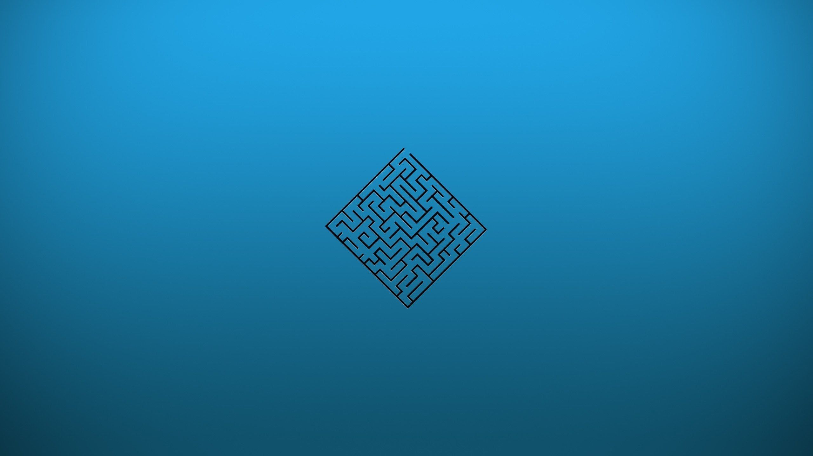

گروه تحقیقاتی آریا اسماعیلیان

آخرین فرصت برای خرید محصولات با قیمت قبلی
ثانیه
دقیقه
ساعت
روز
این صفحه، راهنمای رسمی استفاده از سایت موقت abasmanesh.ir برای دسترسی به محصولات، دانلودها ، خریدها و کیف پول در شرایط استفاده از اینترنت ملی است.
این وبسایت تنها روش رسمی ارائهشده توسط گروه تحقیقاتی عباسمنش برای کاربران سایت اصلی abasmanesh.com است تا بتوانند از طریق اینترنت ملی به محصولات خریداریشده خود دسترسی داشته باشند، فایلهای خود را دانلود کنند و در صورت نیاز محصولات لازم را تهیه کنند.
کیف پول سایت اصلی و کیف پول این سایت از هم جدا هستند، مگر اینکه انتقال به صورت دستی انجام شود